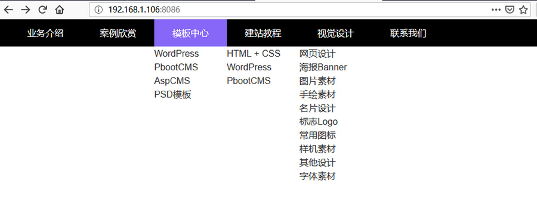

从本篇教程开始，将会以网站中常用的一些组件为例，来帮助大家了解和熟悉PbootCMS的标签。
因为习惯从上往下写页面代码，所以就从网页头部的导航菜单开始。
本篇教程所需要掌握的知识点：CSS盒子模型、CSS选择器、浮动、清除浮动、绝对定位、相对定位、CSS3 2D转换、CSS3 过渡、导航菜单列表标签、当前栏目标签、if条件语句、PHP运算符。
每个人都有自己的代码习惯，比如我就喜欢先写HTML（结构），再写模板标签（数据），接着写CSS（样式），最后写JS（交互）。
所以，先开始写导航菜单的HTML部分：
<!-- 演示就只写二级导航，更多级导航大家可以依葫芦画瓢 --> <nav class="menu"> <ul> <li> <a href="#"></a> <ul> <li> <a href=""></a> </li> </ul> </li> </ul> </nav>
是不是很简单？就是ul和li的无序列表嵌套而已。如果不想写CSS的时候进行复杂的子元素选择，还可以给二级菜单的ul加个class，比如实例代码：
接下来，使用PbootCMS的模板标签来填充数据：
{pboot:pre}
<nav class="menu">
<ul>
{pboot:nav}
<li>
<a href="[nav:link]">[nav:name]</a>
<ul class="sub-menu">
{pboot:2nav parent=[nav:scode]}
<li>
<a href="[2nav:link]">[2nav:name]</a>
</li>
{/pboot:2nav}
</ul>
</li>
{/pboot:nav}
</ul>
</nav>{/pboot:pre}
看一下前端页面：
可以看到，二级菜单已经调用出来了，接下来处理一下导航高亮。
导航高亮：
原理：判断当前栏目的ID和导航的ID是否一致，如果一致，则添加class，然后CSS中给这个class设置高亮样式。
方案：使用if条件语句结合当前栏目标签以及导航菜单列表标签进行判断。
代码：
{pboot:pre}
<nav class="menu">
<ul>
{pboot:nav}
<li class="{pboot:if('[nav:scode]'=='{sort:tcode}')}active{/pboot:if}">
<a href="[nav:link]">[nav:name]</a>
<ul class="sub-menu">
{pboot:2nav parent=[nav:scode]}
<li class="{pboot:if('[2nav:scode]'=='{sort:scode}')}active{/pboot:if}">
<a href="[2nav:link]">[2nav:name]</a>
</li>
{/pboot:2nav}
</ul>
</li>
{/pboot:nav}
</ul>
</nav>{/pboot:pre}
说明：[nav:scode]是导航列表标签中调用的栏目id，{sort:tcode}是当前栏目的顶级栏目编码。那么，这里为什么不用{sort:scode}这个当前栏目编码呢？虽然在一级导航中，当前栏目{sort:scode}和顶级栏目{sort:tcode}的值是一样的，能起到一样的效果。但是导航是需要整站通用的，在子栏目页面，{sort:scode}的值就是子栏目的id了，主导航的一级栏目就得不到高亮样式了。同理，这里也不用{sort:pcode}父级栏目编码。在最下级的导航中则只需要判断[nav:scode]等于{sort:scode}就可以了。留一个思考题吧：如果是三级或者更多级导航的时候应该怎么样判断？提示：利用PHP运算符来组合多个if条件。
到此为之，多级导航所需要的东西都存在了，接下来就交给CSS来把这个多级导航美化一下了。
一、磨刀不误砍柴工，先做一些准备（关于涉及到的一些CSS概念，大家可以自行百度或者去看CSS参考手册）。
1、设置盒模型（方便padding和margin的计算）
//演示就简单粗暴地使用*来
* { box-sizing: border-box; }2、浮动与清除浮动
//左浮动
.float-left { float: left; }
//右浮动
.float-right { float: right; }
//清除浮动
.clearfix::before { content: ""; display: table-cell; }
.clearfix::after { content: ""; display: table; clear: both; }3、设置字体
body { margin: 0; padding: 0; color: #333; font: 16px/24px "-apple-system", "Helvetica", "Microsoft YaHei", "PingFang SC"; outline: none; }4、清除ul和li的默认样式
ul, li { margin: 0; padding: 0; list-style: none; }5、设置a标签的默认样式
a, a:after, a:before { text-decoration: none; color: #333; cursor: pointer; outline: none;
-webkit-transition: all 0.5s;
-moz-transition: all 0.5s;
-ms-transition: all 0.5s;
-o-transition: all 0.5s;
transition: all 0.5s; }
a:hover { color: #8667F7; }以上样式，算是初始化整体页面样式，不仅能用在导航，也影响整站。
看一下初始化样式后的页面：
可以看到，扎眼的链接蓝色和下划线，以及不同浏览器下body不同宽度的边距，ul和li默认的样式都不见了，鼠标移到链接上，还有一个颜色渐变效果。
二、先整体后局部，先给导航整体添加样式美化
1、设置导航高度和宽度，以及背景颜色和文字颜色
/*
- 设置导航高度宽度和背景色
- 没有边距，文字贴着边不好看，给个内边距padding: 16px;
*/
.menu { padding: 0 16px; width: 100%; height: 48px; background: #000; }
/* 一级菜单设置为相对定位 */
.menu > ul > li { position: relative; }
/*
- 因为导航背景颜色是黑色，所以设置一级导航的文字颜色是白色
- 导航高48px，一级导航的文字要垂直居中，可以计算（48-文字行高）/2，然后设置外边距或者内边距，让文字刚好居中。
- 上面的居中方式太复杂了，不如line-height: 48px;让文字行高和导航高度一样，自然就居中了。
*/
.menu > ul > li > a { line-height: 48px; color: #FFF; }2、现在导航是垂直排列的，让他们浮动起来
还记得前面定义的float-left和float-right以及clearfix吗？直接把他们放在class里面吧。
看一下现在前端是什么样子了：
看起来是有点像那么回事了。
三、美化一级导航
1、调整一级导航的间距
.menu > ul > li > a { display: block; padding: 0 32px; line-height: 48px; color: #FFF; }思考：为什么要display: block？同样是边距，为什么使用padding而不用margin？
2、给一级导航高亮
.menu > ul > li:hover > a,
.menu > ul > li.active > a { background: #8667F7; }思考：为什么hover放在li处而不是a处？
看一下现在的前端样式：

四、美化二级导航
1、二级导航背景色，阴影
/*
- 二级菜单会占用高度，因此需要给它设置绝对定位，因为一级菜单是相对定位，因此二级菜单的位置是根据一级菜单来的
- 二级菜单的宽度100%也是根据一级菜单来的
*/
.sub-menu { position: absolute; width: 100%; top: 48px; left: 0; background: #8667F7; box-shadow: 0 0 8px rgba(0,0,0,0.1); }2、调整二级导航文字
.sub-menu > li > a { display: block; padding: 8px; text-align: center; font-size: 14px; color: #FFF; }3、二级导航之间添加分割线
.sub-menu > li + li > a { border-top: 1px solid #7256D8; }4、二级导航鼠标hover效果
.sub-menu > li:hover > a { background: #000; }再来看一下现在的效果：
看起来不错，就差一步了。
五、CSS实现下拉效果
要实现二级导航的下拉效果有很多方法，这里只介绍使用CSS3的2D转换来实现。
CSS3中的transform能够实现元素的2D或3D转换。
实际上，translateY是定义Y轴转换，是最适合的一个。不过考虑到二级菜单的高度不一，还需要使用js来判断，有点麻烦。因此使用scaleY（Y轴缩放）来实现二级菜单的下拉效果。
1、先给二级菜单加一个过渡
-webkit-transition: all 0.5s; -moz-transition: all 0.5s; -ms-transition: all 0.5s; -o-transition: all 0.5s; transition: all 0.5s;
2、设置2D转换的基点位置
-webkit-transform-origin: 0 0; -moz-transform-origin: 0 0; -ms-transform-origin: 0 0; -o-transform-origin: 0 0; transform-origin: 0 0;
3、默认状态Y轴缩放为0
-webkit-transform:scaleY( 0 ); -moz-transform:scaleY( 0 ); -ms-transform:scaleY( 0 ); -o-transform:scaleY( 0 ); transform:scaleY( 0 );
4、默认状态隐藏，并且因为二级导航要覆盖在其他层上面，设置z-index
opacity: 0; //默认透明 z-index: 999; //在其他层上面 visibility: hidden; //不可见
综合样式：
.sub-menu { position: absolute; width: 100%; top: 48px; left: 0; background: #8667F7; box-shadow: 0 0 8px rgba(0,0,0,0.1); opacity: 0; z-index: 999; visibility: hidden;
-webkit-transition: all 0.5s;
-moz-transition: all 0.5s;
-ms-transition: all 0.5s;
-o-transition: all 0.5s;
transition: all 0.5s;
-webkit-transform-origin: 0 0;
-moz-transform-origin: 0 0;
-ms-transform-origin: 0 0;
-o-transform-origin: 0 0;
transform-origin: 0 0;
-webkit-transform:scaleY( 0 );
-moz-transform:scaleY( 0 );
-ms-transform:scaleY( 0 );
-o-transform:scaleY( 0 );
transform:scaleY( 0 ); }5、鼠标hover的时候取消透明和不可见，Y轴缩放为1
/* 注意：一级导航hover时触发 */
.menu > ul > li:hover .sub-menu { opacity: 1; visibility: visible;
-webkit-transform:scaleY( 1 );
-moz-transform:scaleY( 1 );
-ms-transform:scaleY( 1 );
-o-transform:scaleY( 1 );
transform:scaleY( 1 ); }到此为止，一个有简单动画效果的下拉二级导航完成。
总结：二级导航虽然看起来代码量不大，但涉及的知识点还是比较多的，需要花点时间好好研究一下。